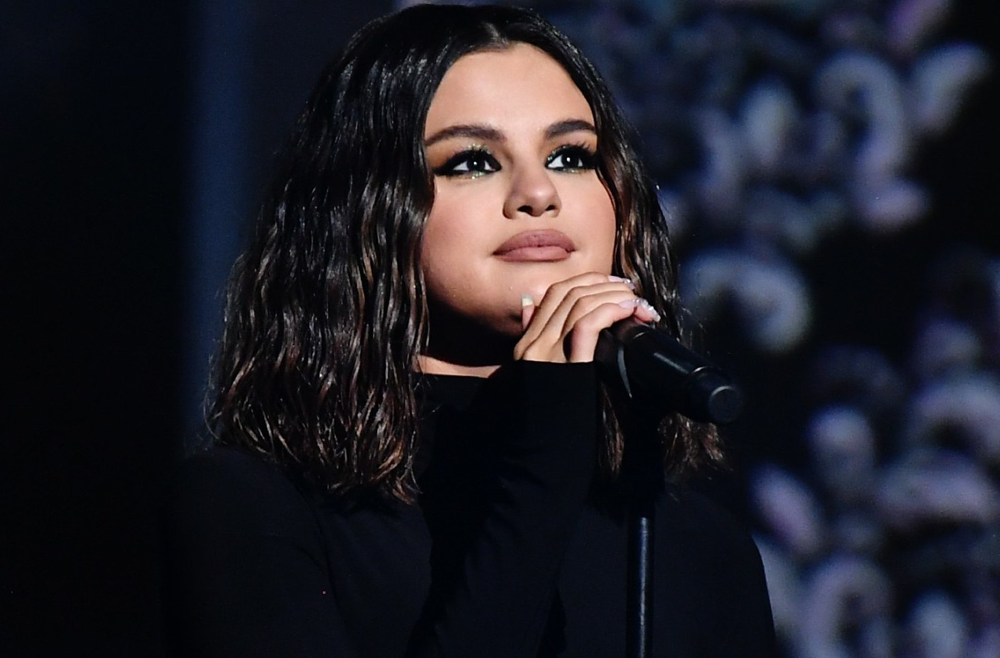
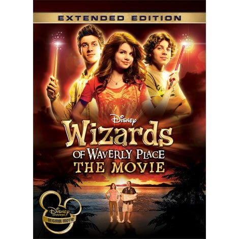
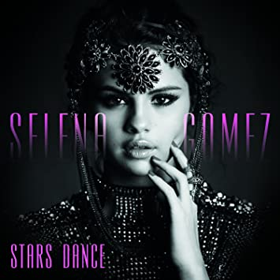

En 2003 apareció en la película Spy Kids 3-D: Game Over, y dos años después en Walker, Texas Ranger: Trial by Fire.
Su gran oportunidad le llegó de la mano de Disney quien la descubrió en 2004. En 2006, fue la protagonista de la película para televisión Brain Zapped. En ese mismo año también participó como estrella invitada en la segunda temporada de Zack and Cody. Un año después participó en tres capítulos de Hannah Montana.
Le ofrecieron el papel protagonista en la serie Wizards of Waverly Place, donde interpretó a Alex Russo.
En el año 2009 trabajó en las películas de Disney Channel Princess Protection Program y Wizards of Waverly Place: The Movie, En 2008 tuvo su primer papel protagonista en una película, Another Cinderella Story. Dos años después apareció en la gran pantalla con Ramona & Beezus.

En el mundo de la música, su primer contacto fue en la serie de televisión Barney & Friends, en la que cantó en algunas canciones.

En 2006, grabó la banda sonora de la serie Brain Zapped. En 2009, grabó One and the Same para Princess Protection Program y Magic para Wizards of Waverly Place. En 2011 grabó Shake It Up: Break It Down, banda sonora de Shake It Up. En 2008, fue contratada por Hollywood Records, y formó la banda Selena Gomez & the Scene. Un año después apareció su primer álbum, Kiss & Tell. Lograron un disco de oro.
La canción más famosa de la banda es Naturally que consiguió el disco de platino en los Estados Unidos y Canadá. Su segundo álbum se publicó en septiembre de 2010, A Year Without Rain. Un año después se lanzó When The Sun Goes Down que logró el disco de oro en los Estados Unidos. Posteriormente trabajó en largometrajes como Monte Carlo (2011) y Hotel Transylvania (2012), Spring Breakers (2013) y debutó como solista con el álbum de estudio Stars Dance (2013), que fue número uno en los Estados Unidos.
Ganó el MTV Video Music Award en la categoría Mejor Video Pop por "Come and Get It" en 2013. Fue liberada de su contrato discográfico con Hollywood Records tras grabarse su álbum de grandes éxitos For You (2014). Posteriormente firmó con Interscope Records.
Ganadora además de premios como ALMA, American Music Award, People's Choice Award, Billboard Women in Music Awards y Teen Choice Awards.
En 2009 fue nombrada embajadora de buena voluntad de la UNICEF, convirtiéndose en la artista más joven en asumir el cargo.
Se diplomó en "homeschooling" en la escuela secundaria en 2010.